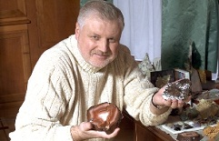
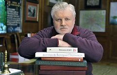
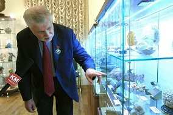

Увлечения
Коллекционирование камней
Сергей Миронов большую часть жизни посвятил геологии, которой "болеет" с раннего детства. Первый "образец", который впоследствии пополнил коллекцию музея Санкт-Петербургского государственного горного университета – трилобит – обнаружил в 9-летнем возрасте. Всего за годы коллекционирования Сергею Миронову, за плечами которого 18 полевых сезонов, удалось собрать более полутора тысяч экземпляров. Любимый камень Сергея Миронова – агат.
Придя в политику, Сергей Михайлович не расстался со своим увлечением. Он постоянно пополняет свою коллекцию: участвует в научных экспедициях, различные минералы ему преподносят в дар. Однако Сергей Миронов считает, что "неправильно, когда уникальной вещью владеет и может восхищаться кто-то один". Малахитовую шкатулку с тремя крупными кристаллами изумруда, которую Сергею Миронову прислали с Урала, он передал горному музею Ленинградского горного института имени Г.В. Плеханова, а 1700-каратный ограненный кристалл чайного топаза – клубу геологов в подшефном Доме творчества юных в Санкт-Петербурге.
Большая коллекция образцов находилась в рабочем кабинете Сергея Миронова в Совете Федерации. За годы работы (с 2001-2011) с коллекцией познакомились тысячи гостей, которые побывали в этом кабинете: российские и иностранные делегации, звезды российского искусства, спорта и культуры, обычные граждане. После завершения карьеры на посту Председателя Совета Федерации, Сергей Миронов решил передать эту уникальную коллекцию в дар Государственному геологическому музею минералов им. В.И.Вернадского. Посетители официального сайта могут познакомиться с коллекцией благодаря сохранившейся панораме рабочего кабинета.
Книги
Сергей Миронов большую часть жизни посвятил геологии, которой "болеет" с раннего детства. Первый "образец", который впоследствии пополнил коллекцию музея Санкт-Петербургского государственного горного университета – трилобит – обнаружил в 9-летнем возрасте. Всего за годы коллекционирования Сергею Миронову, за плечами которого 18 полевых сезонов, удалось собрать более полутора тысяч экземпляров. Любимый камень Сергея Миронова – агат.
Придя в политику, Сергей Михайлович не расстался со своим увлечением. Он постоянно пополняет свою коллекцию: участвует в научных экспедициях, различные минералы ему преподносят в дар. Однако Сергей Миронов считает, что "неправильно, когда уникальной вещью владеет и может восхищаться кто-то один". Малахитовую шкатулку с тремя крупными кристаллами изумруда, которую Сергею Миронову прислали с Урала, он передал горному музею Ленинградского горного института имени Г.В. Плеханова, а 1700-каратный ограненный кристалл чайного топаза – клубу геологов в подшефном Доме творчества юных в Санкт-Петербурге.
Большая коллекция образцов находилась в рабочем кабинете Сергея Миронова в Совете Федерации. За годы работы (с 2001-2011) с коллекцией познакомились тысячи гостей, которые побывали в этом кабинете: российские и иностранные делегации, звезды российского искусства, спорта и культуры, обычные граждане. После завершения карьеры на посту Председателя Совета Федерации, Сергей Миронов решил передать эту уникальную коллекцию в дар Государственному геологическому музею минералов им. В.И.Вернадского. Посетители официального сайта могут познакомиться с коллекцией благодаря сохранившейся панораме рабочего кабинета.
Выставка минералов
"Все, что хранит Земля, не может принадлежать одному человеку и скрываться от других глаз"
В Государственном геологическом музее им. В.И. Вернадского по адресу г. Москва, ул. Моховая, 11, стр. 11 (м. Охотный ряд) работает постоянная выставка "Коллекция минералов Сергея Миронова". Музей В.И. Вернадского работает с 11.00 до 19:00 с понедельника по пятницу, c 12:00 до 19:00 в субботу и воскресенье. Касса музея работает до 18:15.
Открытие постоянной выставки состоялось 25 октября 2011 года. Уникальная коллекция минералов (около 1,5 тысяч экземпляров, в том числе, редкие минералы), часть из которых была собрана Сергеем Мироновым за 17 лет полевых работ в качестве инженера-геофизика в разных уголках нашей планеты, передана музею В.И. Вернадского на безвозмездной основе. Отдельные экземпляры коллекции с 2001-2011 года украшали рабочий кабинет Председателя Совета Федерации в историческом здании на большой Дмитровке с 2001 по 2011 год.
Сергей Миронов: "Эта коллекция – не только красота, это – история нашей планеты. Я собирал ее 40 лет. Среди экспонатов выставки много самоцветов – лазурит, малахит, радонит, яшма, аметист, хризолит, хризопраз, гранат, агат, чароит, а также образцов самородных металлов – платины, золота, серебра, меди. Коллекцию оценили в полтора миллиона долларов. Но для меня она не измеряется деньгами. Потому что в ней вся моя жизнь. И то, что теперь она будет храниться в таком замечательном музее, для меня, как для коллекционера, – лучшая награда".
"Думаю, что я правильно распорядился плодами многолетнего собирательства. Минералы, самородные металлы – все, что хранит Земля, не может принадлежать одному человеку и скрываться от других глаз. Уверен, коллекция послужит людям и принесет радость любителям минералогии и ценителям красоты минералов".
Несмотря на то, что коллекция минералов Сергея Миронова была передана в дар музею, он, по собственному признанию, продолжает оставаться коллекционером: "По договору дарения, даритель имеет право пополнять коллекцию. Что и буду делать".